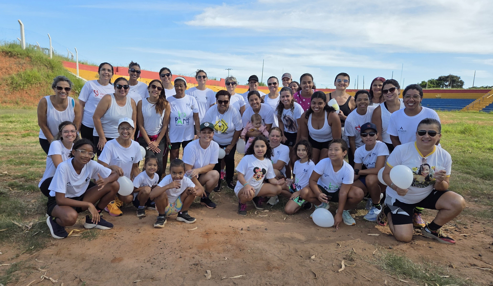
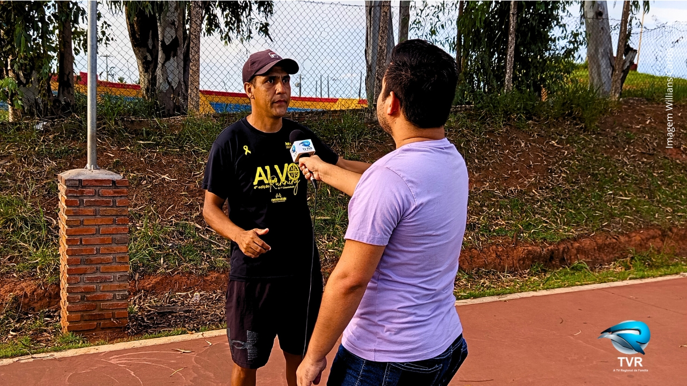
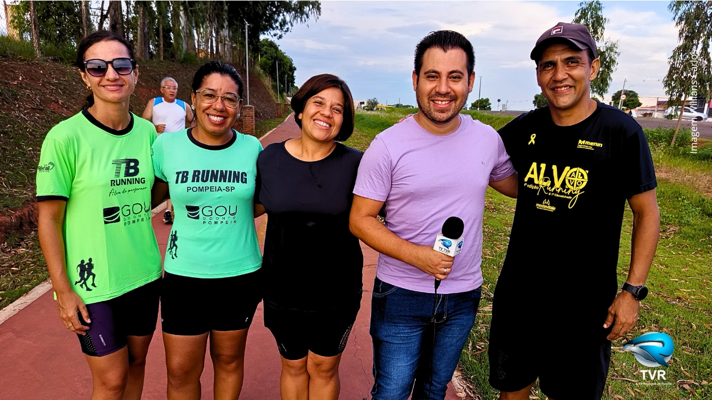
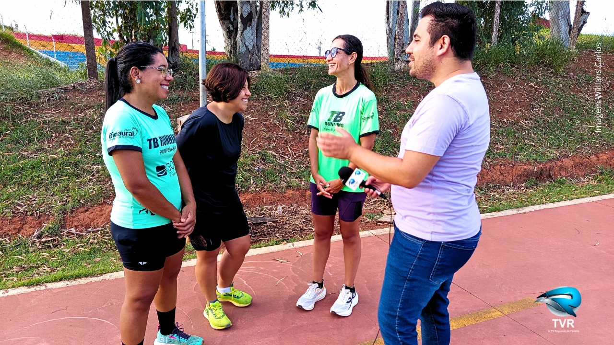

História viva da AEESP: conquistas, desafios e parcerias que fortalecem o esporte em Pompéia
No último dia 08 de março, em celebração ao Dia Internacional da Mulher, cerca de 30 atletas da AEESP participaram do "Corre Delas 2026" em Garça/SP. O evento, organizado pelo Studio 176, reuniu dezenas de entidades esportivas da região em uma manhã de muita energia, superação e sororidade nas pistas. Nossas atletas mostraram força, determinação e representaram com excelência o nome de Pompéia em mais esta competição.

Delegação da AEESP reunida antes da largada do Corre Delas 2026

Celebrando o "Corre"

Atleta AEESP durante a prova

No "Corre" desde pequenas
🌹 A Importância do Dia 08 de Março
O Dia Internacional da Mulher vai muito além de uma data comemorativa. É um momento de reflexão sobre a luta histórica por direitos iguais, oportunidades equitativas e reconhecimento do papel fundamental das mulheres em todos os espaços da sociedade. No esporte, essa luta se traduz em acesso às mesmas condições de treinamento, estrutura e visibilidade. Cada mulher que ocupa as pistas, quebra barreiras e inspira outras a fazerem o mesmo está construindo um legado de igualdade e empoderamento.

Atletas da AEESP unidas

Preparando o futuro no "Corre"

Confraternizando

Juntas, celebrando
🏆 Uma Conquista para Celebrar
Dentre dezenas de entidades esportivas participantes, a AEESP conquistou o destaque de ser a **quarta maior delegação** do evento! Este resultado não é apenas um número, mas sim a prova concreta do trabalho sério e dedicado que desenvolvemos em Pompéia. Cada mulher que vestiu a camiseta da AEESP naquele dia representou não apenas a si mesma, mas todas as outras que sonham em ocupar seu espaço no esporte. Essa conquista nos enche de orgulho e nos motiva a continuar abrindo caminhos para que mais mulheres possam descobrir o poder transformador da atividade física.

Reconhecimento e celebraçã

Momento no pódio
Vittapro Suplementos confirma presença na Corrida Comemorativa do 3º Ano do Treinão
Temos a alegria de confirmar a presença da Vittapro Suplementos na nossa Corrida Comemorativa do 3º Ano do Treinão. A marca estará presente com um estande especial, oferecendo degustação gratuita de pré-treino para os participantes e realizará sorteio de um Kit Especial FTW composto por Whey Ultra e Creatina. A iniciativa visa proporcionar uma experiência adicional aos atletas, reforçando a importância da nutrição esportiva aliada à prática regular de atividade física.
Nota de Agradecimento: A Diretoria da AEESP agradece à Vittapro Suplementos pela confiança em nosso projeto. Parcerias como esta são fundamentais para elevarmos a qualidade do evento e oferecermos experiências adicionais aos nossos atletas.

Delegação feminina da AEESP participará do Corre Delas em Garça/SP
Em comemoração ao Dia Internacional da Mulher, cerca de 30 atletas da AEESP estarão presentes no "Corre Delas 2026", organizado pelo Studio 176 em Garça/SP. No dia 8 de março, às 08h, nossa delegação feminina vai ocupar as pistas nas modalidades Corrida 5K, Caminhada 3K e Corrida Kids. Uma oportunidade incrível de celebrar a força, a saúde e a união das mulheres pompeianas através do esporte. O evento conta com estrutura completa de apoio, hidratação e segurança para todas as participantes.
📍 Informações: 8 de Março (domingo) • 08h • Studio 176 – Garça/SP • Modalidades: 5K, 3K Caminhada e Kids

Momento de integração durante o Treinão de 1º de Março no Fundo do Recinto Mário Zaparolli
No último dia 1º de março, realizamos mais uma edição do nosso tradicional Treinão de Domingo. A manhã foi de muita integração, suor e superação no Fundo do Recinto Mário Zaparolli. Os participantes de todas as idades mostraram que o esporte é realmente a ferramenta perfeita para unir nossa comunidade em Pompéia. O evento reforçou nosso compromisso com a promoção da saúde e do bem-estar através da atividade física regular e gratuita.

Aquecimento

O sol também quis participar

O futuro é agora
📅 Próximos Treinos: Todos os domingos às 7h15 no Fundo do Recinto. Participe!
No último sábado, 28 de fevereiro, os membros da AEESP se reuniram para definir os detalhes de preparação para a Corrida Comemorativa do 3º Ano do Treinão e discutir os futuros passos da Associação. A reunião contou com a participação ativa de todos os presentes, que contribuíram com ideias e sugestões para fortalecer ainda mais nossos projetos esportivos e sociais em Pompéia. Foram abordados temas como estrutura do evento, parcerias, cronograma de atividades e estratégias para ampliar o impacto social da entidade.

Membros da AEESP durante reunião de planejamento

Discussão sobre os futuros passos da Associação

Matéria especial da TVR registrou os bastidores e o impacto social do Treinão AEESP em Pompéia.
A TVR registrou em matéria especial a essência do nosso trabalho e ressaltou a Corrida Comemorativa do 3º ano do Treinão. A entrevista com o presidente Tiago Bezerra, somada às contribuições de Andreia, Júlia e Vanusa, destacou a relação entre esporte, comunidade e saúde mental. Assista na home →

Bastidores da gravação com a equipe da TVR

Integração e representatividade da nossa comunidade

Equipe AEESP reunida após a participação na Corrida de Rua de Marília.
Membros da AEESP representaram Pompéia na tradicional corrida de Marília, fortalecendo laços com comunidades esportivas da região e promovendo o nome da nossa cidade.

Crianças da AEESP em ação na prova

Na AEESP a determinação começa cedo

Premiação com o banner da AEESP no palco

Entrega do título de Sócio Benemérito ao Prefeito Municipal durante o lançamento oficial.
Realizamos nosso primeiro Treinão oficial sob a nova identidade da AEESP, com a presença do Prefeito Municipal, que demonstrou apoio à nossa missão de transformar vidas pelo esporte.

Nossa comunidade unida na campanha Janeiro Branco.
A AEESP realizou o Janeiro Branco com atividades que mostraram como o esporte é aliado da saúde mental. Treinos especiais e rodas de conversa reforçaram: cuidar da mente é tão importante quanto cuidar do corpo.

Momento de confraternização durante as atividades

Atividades de conscientização sobre saúde mental

Crianças engajadas nas atividades lúdicas
A AEESP recebeu seu CNPJ (64.661.923/0001-77) na Receita Federal, consolidando nossa existência jurídica e abrindo caminho para parcerias e expansão de projetos.
Membros fundadores aprovaram a Ata de Fundação e o Estatuto da AEESP, marcando oficialmente o nascimento de nossa entidade civil sem fins lucrativos dedicada à transformação social pelo esporte.